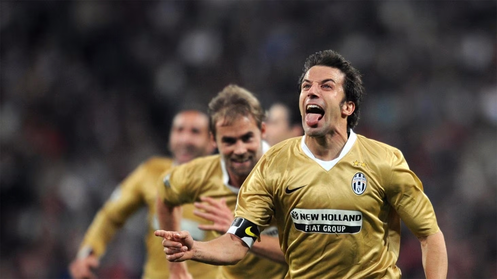

Juventus FC Third Kit
2008

Embarking on a captivating expedition to Turin, the cradle of Italian football excellence, my journey unfolded as a tribute to the rich heritage of the sport. Navigating the historic streets, my destination was the revered Juventus Stadium, where the echoes of triumphs and glory resonated. The anticipation reached its zenith as I explored the Juventus merchandise emporium, and my eyes were drawn to an exquisite piece of footballing elegance—the Juventus gold kit. The jersey, bathed in a regal hue, with the iconic black and white stripes, exuded a sense of prestige and championship pedigree. Donning the Juventus gold kit was not just an act of fandom; it was a nod to the club's storied history and unyielding pursuit of excellence. The matchday experience, surrounded by passionate fans, added another layer to the immersive journey through Turin's footballing heart. The Juventus gold kit, now a prized possession, stands as a tangible link to the magnetic allure of the city and the timeless legacy of Juventus, where every thread encapsulates the essence of Turin's footballing grandeur.